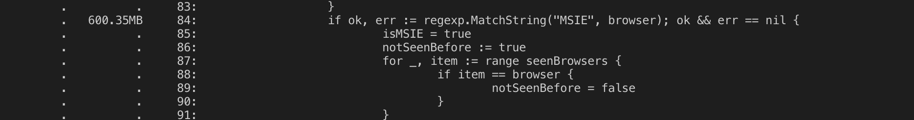
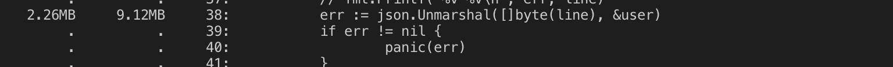
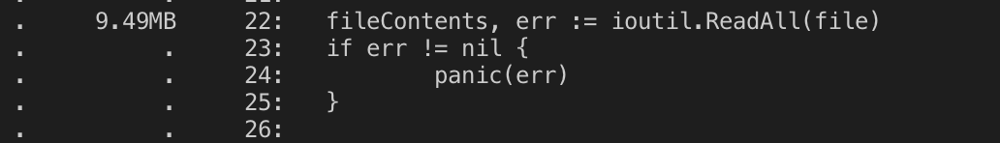

Регулярные выражения - дорогая операция - нужно заменить их на поиск подстроки


Для более быстрой распаковки json описать структуру User (только используемые поля), чтобы избавиться от приведения типов и воспользоваться easyjson

ReadAll земенить ReadFile, так как нам нужно только содержимое файла


Убрать приведение к строке, а потом обратно в слайс байт, Split по строке заменить на bytes.Split

Установить capacity для слайсов, чтобы уменьшить количество аллокаций
SlowSearch

FastSearch